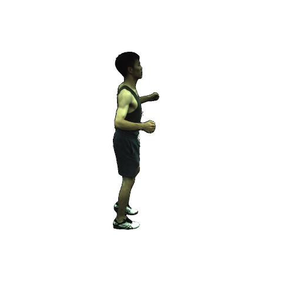

- University of Illinois at Urbana-Champaign
Abstract
We introduce GoMAvatar, a novel approach for real-time, memory-efficient, high-quality animatable human modeling. GoMAvatar takes as input a single monocular video to create a digital avatar capable of re-articulation in new poses and real-time rendering from novel viewpoints, while seamlessly integrating with rasterization-based graphics pipelines. Central to our method is the Gaussians-on-Mesh representation, a hybrid 3D model combining rendering quality and speed of Gaussian splatting with geometry modeling and compatibility of deformable meshes. We assess GoMAvatar on ZJU-MoCap data and various YouTube videos. GoMAvatar matches or surpasses current monocular human modeling algorithms in rendering quality and significantly outperforms them in computational efficiency (43 FPS) while being memory-efficient (3.63 MB per subject).

Novel pose synthesis
In the following we present novel pose synthesis. We use the texts from HumanML3D and Human Motion Diffusion Model to generate the target poses.
* We obtained permission from the YouTube author to use the videos "way2sexy", "invisible" and "story" for research purposes.
* We obtained permission from the YouTube author to use the videos "way2sexy", "invisible" and "story" for research purposes.
Target pose
HumanNeRF
MonoHuman
GoMAvatar (Ours)
"Moving hands around near face."
Novel view synthesis
In the following we present 360° freeview rendering as well as the rendered normal maps.

Reference image
HumanNeRF
MonoHuman
GoMAvatar (Ours)
Pseudo ground-truth
HumanNeRF
MonoHuman
GoMAvatar (Ours)
Citation
If you find our project useful, please consider citing:AخA
@inproceedings{wen2024gomavatar,
title={{GoMAvatar: Efficient Animatable Human Modeling from Monocular Video Using Gaussians-on-Mesh}},
author={Jing Wen and Xiaoming Zhao and Zhongzheng Ren and Alex Schwing and Shenlong Wang},
booktitle={CVPR},
year={2024}
}